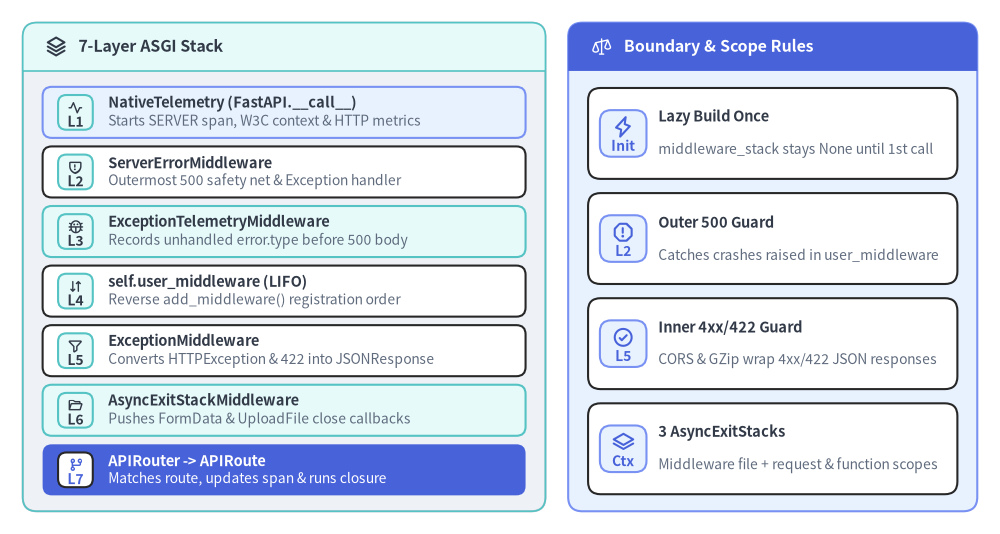
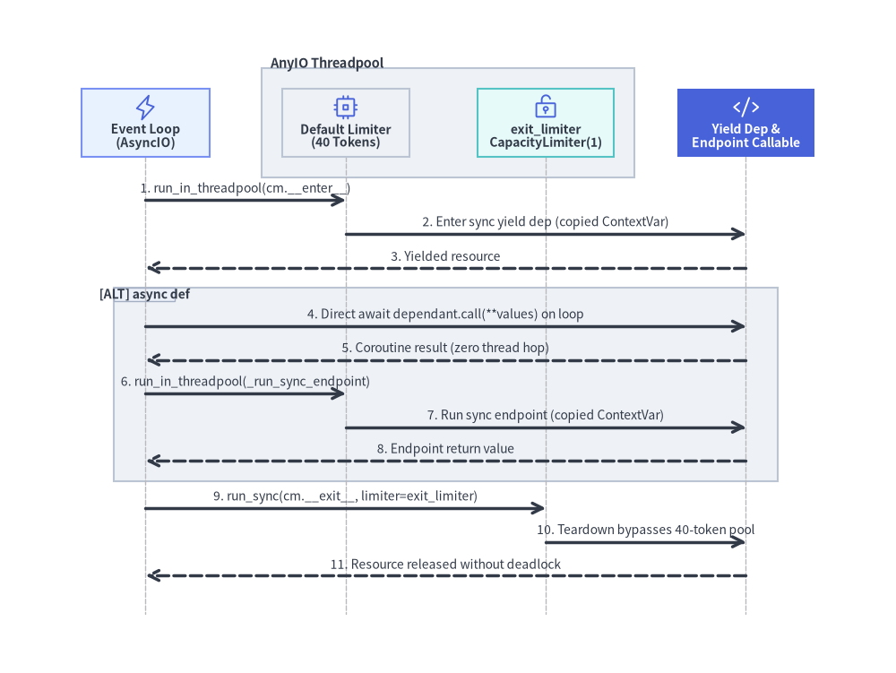

Middleware Onion & AnyIO Threadpool Concurrency
Every HTTP request, WebSocket session, and ASGI lifespan event entering a FastAPI instance passes through FastAPI.__call__ in fastapi/applications.py. Rather than rebuilding wrapper closures on every request, FastAPI lazily compiles a deterministic 7-layer ASGI middleware onion once on the first HTTP or WebSocket call, separating outer crash recovery (500) from inner application exception handling (4xx / 422) and offloading synchronous callables onto AnyIO worker threads.

1. FastAPI.__call__ Entry Dispatch and Lazy Stack Compilation
FastAPI inherits from starlette.applications.Starlette, initializing self.middleware_stack: ASGIApp | None = None during __init__(). Deferring compilation until the first inbound request allows applications to call app.add_middleware(), @app.middleware("http"), and @app.exception_handler() in any order during startup without repeatedly rebuilding wrapper chains.
When await app(scope, receive, send) executes in fastapi/applications.py, it branches across three execution paths:
- Lifespan Interception (
scope["type"] == "lifespan"): Delegates tofastapi.telemetry._runtime.lifespan(config=self._telemetry, app=super().__call__, ...)so optional OTLP auto-configuration runs onlifespan.startupand owned exporters flush onlifespan.shutdown.complete. - Untraced Fast Path: If
scope["type"]is neither"http"nor"websocket", if"fastapi.telemetry"is already present inscope(such as a mounted sub-application), or ifself._native_telemetry.enabled()returnsFalse, FastAPI awaitssuper().__call__(scope, receive, send)directly.Starlette.__call__then setsscope["app"] = self, lazily buildsself.middleware_stack = self.build_middleware_stack()ifNone, and invokesawait self.middleware_stack(scope, receive, send). - Instrumented HTTP/WebSocket Path: When
self._native_telemetry.enabled()isTrue,FastAPI.__call__ensuresself.middleware_stackis built, checks_legacy_otel(self.middleware_stack)to detectopentelemetry.instrumentation.asgi.OpenTelemetryMiddleware, and wrapssuper().__call__insideawait self._native_telemetry(...).
2. Anatomy of build_middleware_stack() (Outer to Inner)
FastAPI.build_middleware_stack() overrides Starlette's builder to inject ExceptionTelemetryMiddleware and AsyncExitStackMiddleware around self.user_middleware. It first partitions self.exception_handlers: keys 500 and Exception become error_handler for ServerErrorMiddleware, while all specific exception classes and status codes populate exception_handlers for ExceptionMiddleware. It then folds the middleware list in reverse around self.router:
| Layer | Class & Module | Scope / State Key | Primary Responsibility |
|---|---|---|---|
| L1 | NativeTelemetry (fastapi.telemetry._asgi) |
scope["fastapi.telemetry"] |
Wraps super().__call__ in FastAPI.__call__; extracts W3C context, starts SERVER span, and records duration/active metrics. |
| L2 | ServerErrorMiddleware (starlette.middleware.errors) |
— | Outermost middleware_stack layer; catches unhandled Exceptions, runs 500/Exception handler or debug traceback, sends 500, and re-raises. |
| L3 | ExceptionTelemetryMiddleware (fastapi.telemetry._asgi) |
_RequestTelemetry._exceptions |
Observes unhandled exceptions escaping L4–L7 before L2 sends the 500 response body and closes the root span. |
| L4 | self.user_middleware (starlette.middleware) |
User-defined | Custom middlewares in reverse registration (LIFO) order: add_middleware() calls self.user_middleware.insert(0, ...). |
| L5 | ExceptionMiddleware (starlette.middleware.exceptions) |
— | Catches HTTPException, RequestValidationError (422), WebSocketRequestValidationError (1008), and custom typed handlers. |
| L6 | AsyncExitStackMiddleware (fastapi.middleware.asyncexitstack) |
scope["fastapi_middleware_astack"] |
Opens an AsyncExitStack primarily to close FormData and UploadFile handles after response streaming finishes. |
| L7 | APIRouter (fastapi.routing) |
scope["router"], scope["route"] |
Matches APIRoute / Mount / frontend routes, calls _route_selected(), and enters request_response(). |
Why ServerErrorMiddleware Wraps Outside user_middleware While ExceptionMiddleware Wraps Inside
Splitting error handling across L2 (outside self.user_middleware) and L5 (inside self.user_middleware) solves two opposing ASGI requirements:
- Protecting the Server from Middleware Crashes (L2 Outside L4): User middlewares execute arbitrary code before and after routing (parsing auth headers, opening Redis sessions, mutating responses). If a user middleware raises an unhandled
RuntimeError, L5 (ExceptionMiddleware) has already exited or was never reached. PlacingServerErrorMiddlewareat L2 guarantees that crashes inside user middleware still produce a valid HTTP500 Internal Server Errorresponse—and placingExceptionTelemetryMiddlewareat L3 ensureserror.typeis captured beforeServerErrorMiddlewaresends that500body. - Preserving Middleware Headers on Handled HTTP Errors (L5 Inside L4): Expected application errors such as
HTTPException(status_code=401)orRequestValidationError(422viafastapi/exception_handlers.py) are caught at L5 (and insiderequest_response()via Starlette'swrap_app_handling_exceptions) and converted into normalJSONResponseobjects before unwinding through L4. As a result, outer middlewares likeCORSMiddleware,GZipMiddleware, or custom timing middlewares see a standard HTTP response and properly attachAccess-Control-Allow-Originheaders to401and422responses instead of aborting on an uncaught exception.
The Three Scoped AsyncExitStack Instances
FastAPI separates resource cleanup across three nested AsyncExitStack scopes rather than closing everything in L6:
scope["fastapi_middleware_astack"](L6 —AsyncExitStackMiddleware): Entered inside all user middlewares (preserving the innercontextvarstask context created byBaseHTTPMiddleware) and exited after the full response completes.get_request_handler()registersfile_stack.push_async_callback(body.close)here so uploadedSpooledTemporaryFilehandles remain open throughout streaming responses.scope["fastapi_function_astack"](L7 —request_response()): Exits beforeawait response(scope, receive, send)begins, tearing downDepends(..., scope="function")yielddependencies prior to response streaming while still lettingyieldblocks catch or raiseHTTPException.scope["fastapi_inner_astack"](L7 —request_response()): Wrapsawait response(scope, receive, send), keepingDepends(..., scope="request")yielddependencies (such as database sessions consumed by streaming generators) alive until the last response byte is sent.
3. AnyIO Threadpool Offloading and contextvars Semantics
FastAPI runs on an asynchronous event loop, where any blocking CPU or synchronous I/O call would stall all concurrent connections on the worker process. To support both async def and plain def functions safely, FastAPI pairs compile-time coroutine detection with AnyIO worker-thread offloading.

run_endpoint_function() (is_coroutine vs run_in_threadpool)
When get_request_handler() in fastapi/routing.py compiles a route closure, it inspects the endpoint once via is_coroutine = _is_coroutine_callable(dependant.call) (which unwraps functools.partial and callable instances via fastapi/dependencies/models.py). At request time, run_endpoint_function() dispatches based on that precomputed flag:
is_coroutine == True(async def): Executes directly on the event loop viaawait dependant.call(**values)insidewith _operation(name="endpoint", function=dependant.call):, avoiding any thread switch or context-copy cost.is_coroutine == False(def): Offloads execution via Starlette'sawait run_in_threadpool(_run_sync_endpoint, function=dependant.call, arguments=values), which delegates toanyio.to_thread.run_syncusing AnyIO's default 40-threadCapacityLimiter. Notice that_run_sync_endpointopens_operation(name="endpoint", ...)inside the worker thread so the child OpenTelemetry span remains active for the exact synchronous call duration.
The same discipline governs solve_dependencies() (calling sync sub-dependencies via run_in_threadpool) and serialize_response() (validating response models via run_in_threadpool when is_coroutine=False).
contextmanager_in_threadpool() and CapacityLimiter(1) Deadlock Prevention
Synchronous generator dependencies (def get_db(): ... yield db ...) cannot be iterated directly on the event loop without risking blocking I/O in both setup and teardown. In fastapi/dependencies/utils.py, _solve_generator() wraps sync generators with contextlib.contextmanager and passes them to contextmanager_in_threadpool() in fastapi/concurrency.py:
- Setup (
__enter__): Runsyield await run_in_threadpool(cm.__enter__)against AnyIO's shared default thread limiter (40 tokens). - Teardown (
__exit__): Allocates a dedicated per-callexit_limiter = CapacityLimiter(1)and runsawait anyio.to_thread.run_sync(cm.__exit__, ..., limiter=exit_limiter)in both theexcept Exception as e:branch (propagatingcm.__exit__'s boolean exception-suppression result) and theelse:branch.
Why allocate a fresh CapacityLimiter(1) for __exit__? Consider a database pool capped at 10 connections under a burst of 50 requests: 10 requests acquire DB sessions, while 40 concurrent worker threads block inside cm.__enter__ waiting for a free DB connection—exhausting all 40 tokens of AnyIO's default threadpool limiter. When the first active request finishes and attempts to return its DB connection in cm.__exit__, waiting on the default limiter would deadlock forever: cm.__enter__ threads wait for cm.__exit__ to release a DB connection, while cm.__exit__ waits for a cm.__enter__ thread to free an AnyIO token. Passing limiter=exit_limiter lets __exit__ run immediately without contending on the saturated default pool.
How contextvars Copy Into Worker Threads
Both starlette.concurrency.run_in_threadpool and anyio.to_thread.run_sync capture the calling task's contextvars.Context via contextvars.copy_context() on the event loop and invoke context.run(...) inside the worker thread:
- Downstream Visibility: Any
ContextVarpopulated by anasyncmiddleware orasyncdependency (including FastAPI's_REQUEST_TELEMETRY_KEYOpenTelemetry context) is automatically visible inside syncdefyielddependencies and syncdefendpoints. - Snapshot Isolation Caveat: Because
copy_context()creates a shallow copy for eachrun_synchop, callingmy_var.set("new")inside a synchronousdefdependency mutates only that worker call's copiedContext; the mutation does not propagate back to the event loop, to subsequent sync endpoints, or even fromcm.__enter__tocm.__exit__(which execute in two separaterun_syncinvocations). MutateContextVartokens inasyncmiddlewares orasync defyielddependencies when cross-stage visibility is required.
4. Verifying the 7-Layer Stack and ContextVar Propagation
The snippet below inspects a live FastAPI() instance before and after serving a request, verifying lazy middleware_stack compilation, the exact outer-to-inner middleware chain down to APIRouter, and ContextVar propagation into worker threads:
from contextvars import ContextVar
import threading
from fastapi import Depends, FastAPI
from fastapi.telemetry._asgi import NativeTelemetry
from fastapi.testclient import TestClient
from starlette.types import ASGIApp, Receive, Scope, Send
request_id_var: ContextVar[str] = ContextVar("request_id", default="unset")
class FirstUserMiddleware:
def __init__(self, app: ASGIApp) -> None:
self.app = app
async def __call__(self, scope: Scope, receive: Receive, send: Send) -> None:
token = request_id_var.set("req-42")
try:
await self.app(scope, receive, send)
finally:
request_id_var.reset(token)
class SecondUserMiddleware:
def __init__(self, app: ASGIApp) -> None:
self.app = app
async def __call__(self, scope: Scope, receive: Receive, send: Send) -> None:
await self.app(scope, receive, send)
app = FastAPI()
app.add_middleware(FirstUserMiddleware)
app.add_middleware(SecondUserMiddleware)
def sync_yield_dep():
yield {
"dep_thread": threading.current_thread().name,
"dep_ctx": request_id_var.get(),
}
@app.get("/threads")
def read_threads(dep: dict[str, str] = Depends(sync_yield_dep)) -> dict[str, str]:
return {
**dep,
"ep_thread": threading.current_thread().name,
"ep_ctx": request_id_var.get(),
}
# 1. Lazy compilation: middleware_stack is None until the first HTTP/WS call
assert app.middleware_stack is None
assert isinstance(app._native_telemetry, NativeTelemetry)
with TestClient(app) as client:
payload = client.get("/threads").json()
assert payload["dep_ctx"] == "req-42"
assert payload["ep_ctx"] == "req-42"
assert payload["dep_thread"] != threading.main_thread().name
# 2. Walk app.middleware_stack from outermost wrapper to innermost APIRouter
layers: list[str] = []
cursor: object | None = app.middleware_stack
while cursor is not None:
layers.append(type(cursor).__name__)
if cursor is app.router:
break
cursor = getattr(cursor, "app", None)
assert layers == [
"ServerErrorMiddleware",
"ExceptionTelemetryMiddleware",
"SecondUserMiddleware",
"FirstUserMiddleware",
"ExceptionMiddleware",
"AsyncExitStackMiddleware",
"APIRouter",
]
Next, see NativeTelemetry & Runtime Spans for a source-level walkthrough of how Layer 1 (NativeTelemetry) and Layer 3 (ExceptionTelemetryMiddleware) coordinate spans, metrics, and error logs.